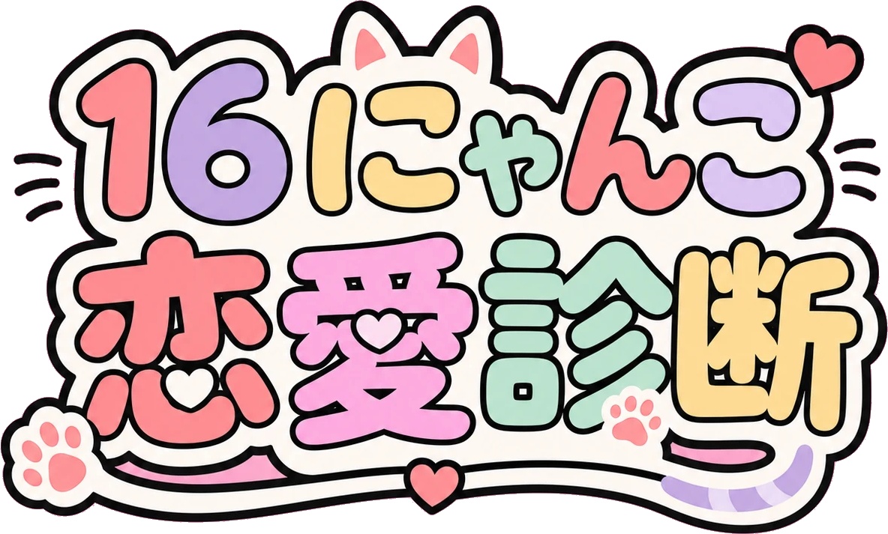
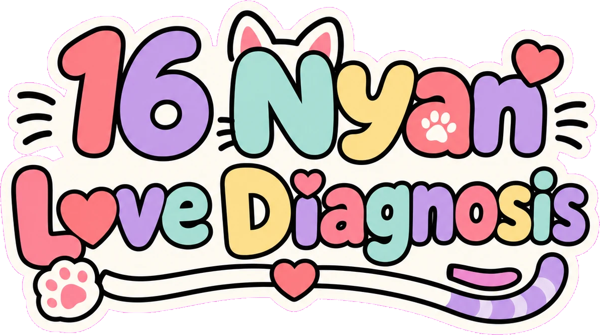
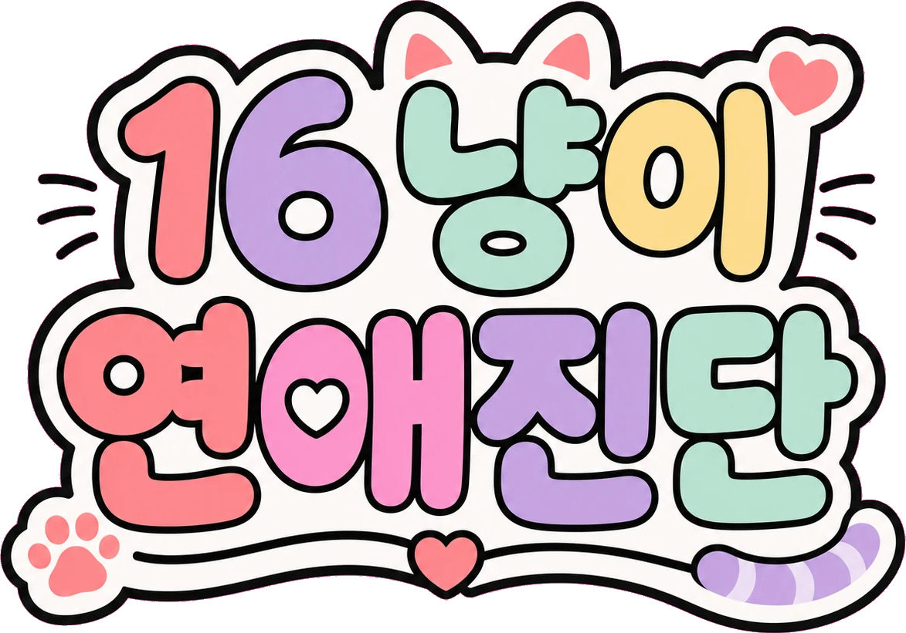
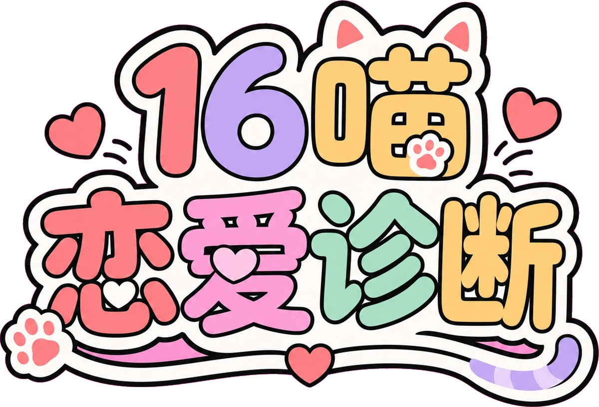
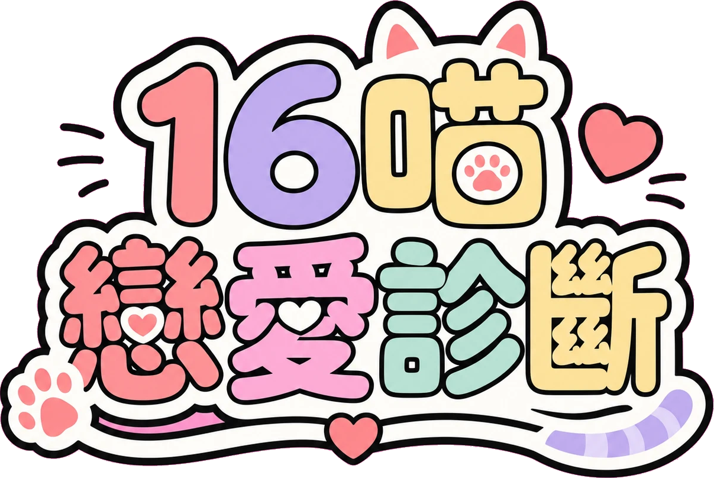

16タイプ性格診断であなたの恋愛タイプを16種類の猫種にたとえて無料診断。気になるあの人との相性チェックもできます。
⏱ 約1分・全12問 ／ 🆓 無料・登録不要 ／ 🔓 結果ですぐ相性チェック
「16にゃんこ恋愛診断」は、MBTI（16タイプ性格分類）の4つの軸をもとに、あなたの恋愛タイプをかわいい猫種にたとえて診断する無料サービスです。12問の質問に答えるだけで、一途なノルウェージャンフォレストキャットタイプ、尽くすサイベリアンタイプ、自由なソマリタイプなど、16種類の「恋愛にゃんこ」の中からあなたにぴったりの1匹が見つかります。
診断結果では、性格・恋愛傾向・恋人になったときの姿・ケンカしたときの行動・相性のいいタイプTOP3まで詳しく解説。気になるあの人との相性チェックや、毎日引ける恋愛おみくじ、今日の距離感アドバイス＆ラッキーアイテムなど、恋を楽しくするコンテンツが満載です。日本語・英語・韓国語・中国語に対応しています。
気になる人との恋を進めたいときに役立つ、MBTIタイプ別の恋愛コラムです。告白・片思い・ケンカ・復縁など、シーン別のヒントを猫種になぞらえて解説しています。
Q. 診断は無料ですか？
はい、すべて無料・登録不要で利用できます。
Q. MBTIの結果を知っていれば質問に答えなくてもいい？
はい。トップの「タイプがわかる人はこちら」から16タイプを直接選べます。
Q. 診断は当たりますか？
本診断はMBTI理論を参考にしたエンターテインメントコンテンツです。心理学的・医学的な診断ではありませんので、恋のヒントとして気軽にお楽しみください。